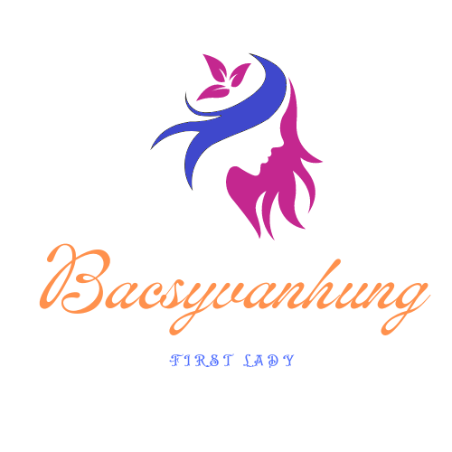
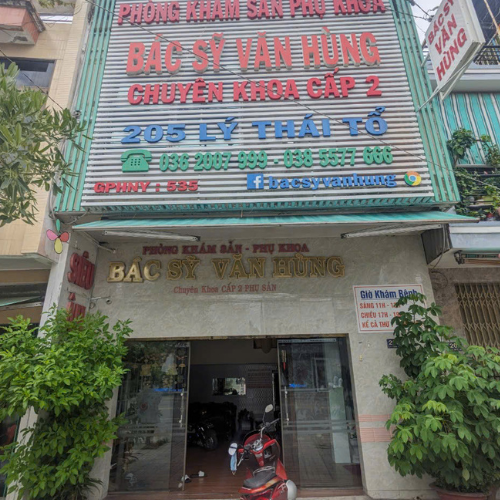

Tọa lạc tại trung tâm TP. Long Xuyên, Phòng khám Phụ sản Bác sĩ Văn Hùng do BSCKII Nguyễn Văn Hùng trực tiếp phụ trách với hơn 20 năm kinh nghiệm chuyên sâu trong lĩnh vực Sản - Phụ khoa. Phòng khám tự hào là địa chỉ uy tín đồng hành cùng hàng ngàn mẹ bầu và chị em phụ nữ qua các dịch vụ: khám thai định kỳ, siêu âm màu kỹ thuật cao (2D/3D/4D/Doppler) tầm soát dị tật thai nhi, khám và điều trị toàn diện bệnh lý phụ khoa, cùng các giải pháp kế hoạch hóa gia đình an toàn, nhẹ nhàng và hiệu quả.
Với trang thiết bị chẩn đoán hình ảnh hiện đại, quy trình thăm khám tận tâm, riêng tư và các biện pháp giảm đau tối ưu, chúng tôi cam kết mang lại sự an tâm tuyệt đối và trải nghiệm y tế chất lượng nhất cho từng khách hàng.